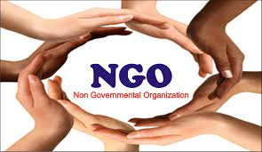

Activities
NGOs act as implementers, catalysts, and partners. They mobilize resources to provide goods and services to people who have been affected by a natural disaster; they drive change, and partner with other organizations to tackle problems and address human needs.[23]
NGOs vary by method; some are primarily advocacy groups, and others conduct programs and activities. Oxfam, concerned with poverty alleviation, may provide needy people with the equipment and skills to obtain food and drinking water; the Forum for Fact-finding Documentation and Advocacy (FFDA) helps provide legal assistance to victims of human-rights abuses. The Afghanistan Information Management Services provide specialized technical products and services to support development activities implemented on the ground by other organizations. Management techniques are crucial to project success.[24]
The World Bank classifies NGO activity into two general categories:[5][25][20]
operational NGOs, whose primary function is the design and implementation of development-related projects
advocacy NGOs, whose primary function is to defend or promote a particular cause and who seek to influence the policies and practices of International governmental organisations (IGOs).
NGOs may also conduct both activities: operational NGOs will use campaigning techniques if they face issues in the field, which could be remedied by policy change, and campaigning NGOs (such as human-rights organizations) often have programs which assist individual victims for whom they are trying to advocate.[19][20]